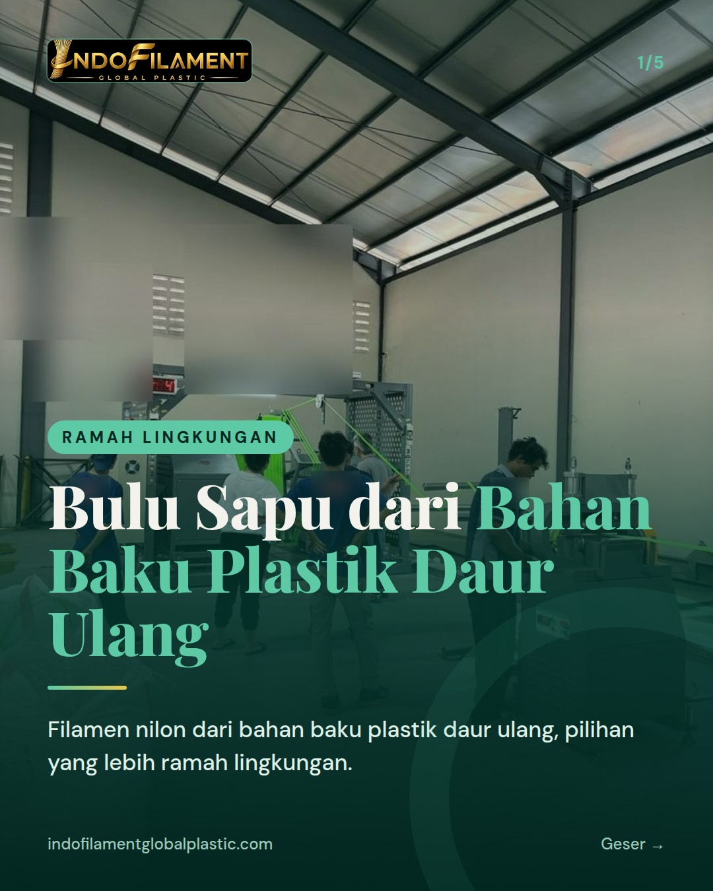
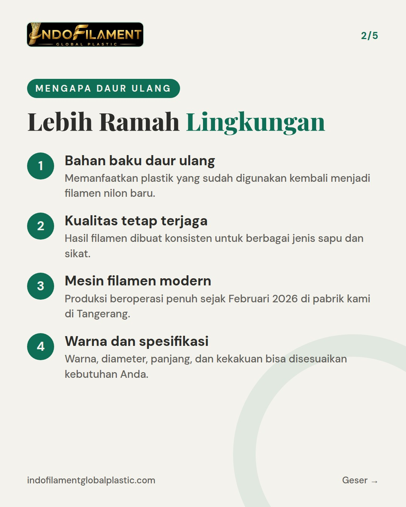
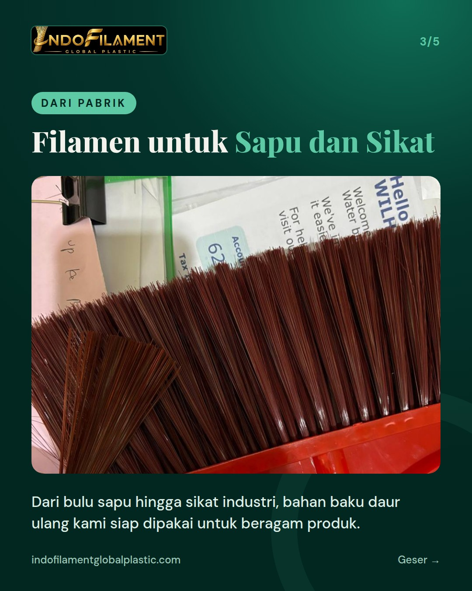
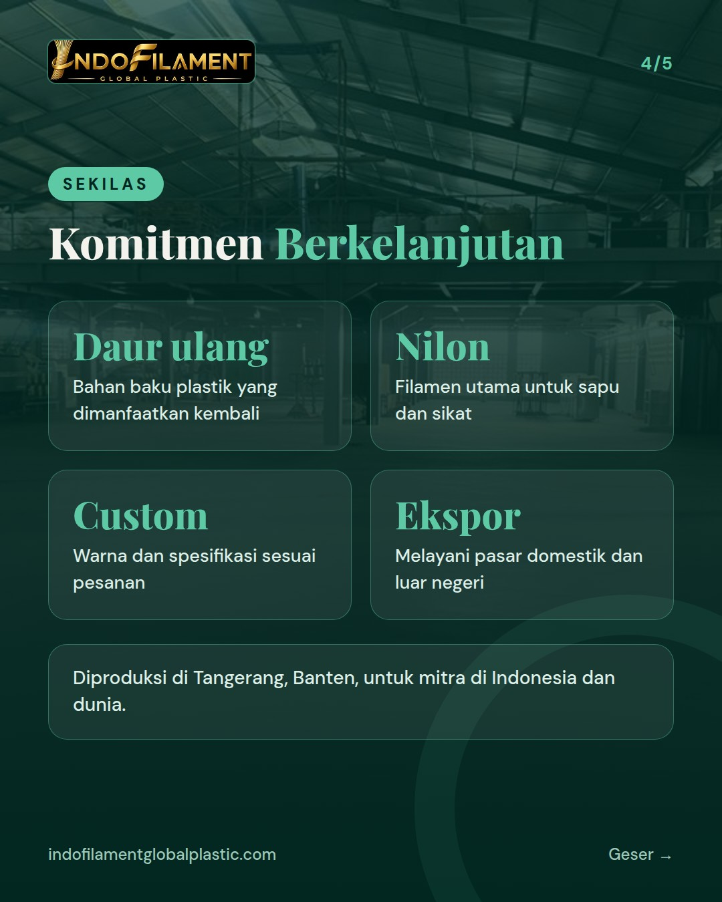
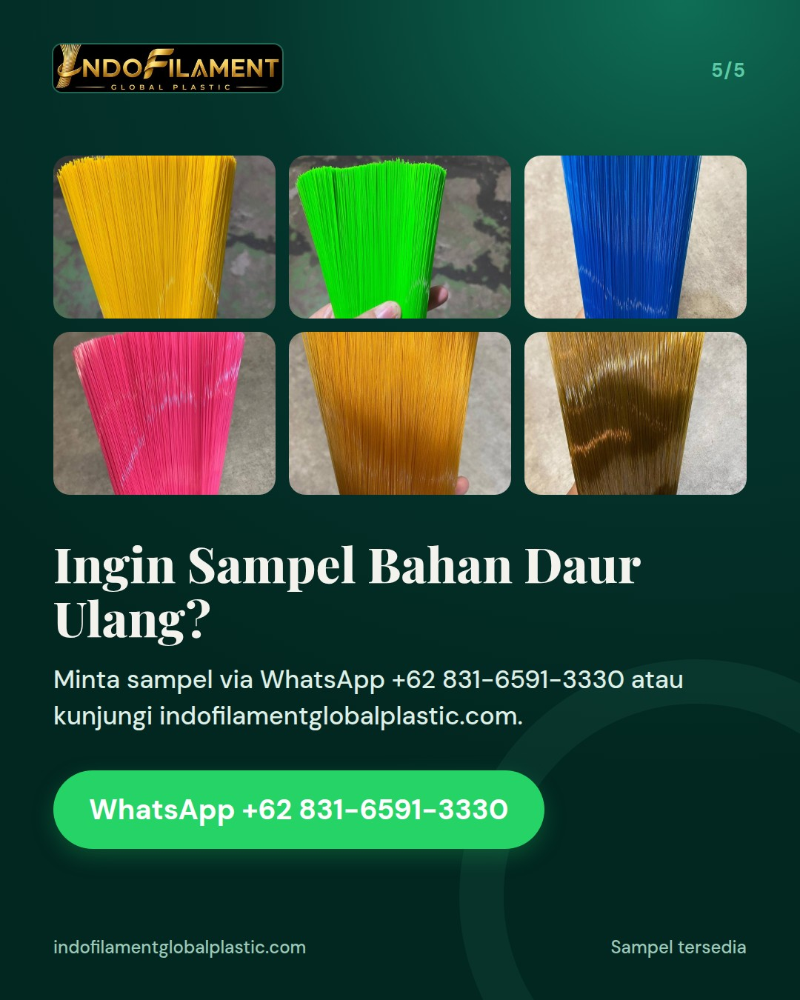

Bahan baku plastik daur ulang: bulu sapu yang lebih ramah lingkungan





Sapu yang bersih juga bisa lebih peduli lingkungan. 🌿 Di PT Indofilament Global Plastic, bulu sapu dan bulu sikat kami dibuat dari filamen nilon berbahan baku plastik daur ulang. Hasilnya tetap kuat dan konsisten, dengan pilihan warna dari kuning, hijau, biru, pink, hingga Gold Series, serta diameter, panjang, dan kekakuan yang bisa disesuaikan kebutuhan Anda. Cocok untuk merek sapu dan sikat, distributor, maupun importir yang ingin menghadirkan produk lebih ramah lingkungan. Kami juga melayani filamen custom, OEM, dan private label. Minta sampel via WhatsApp +62 831-6591-3330 atau DM kami sekarang. We produce nylon filaments made from recycled plastic raw materials for brooms and brushes, with custom colors and specifications available for export buyers. #bulusapu #bulusikat #filamen #pabriksapu #madeinindonesia #broomfilament #brushfilament #ramahlingkungan #daurulang #pabrikindonesia